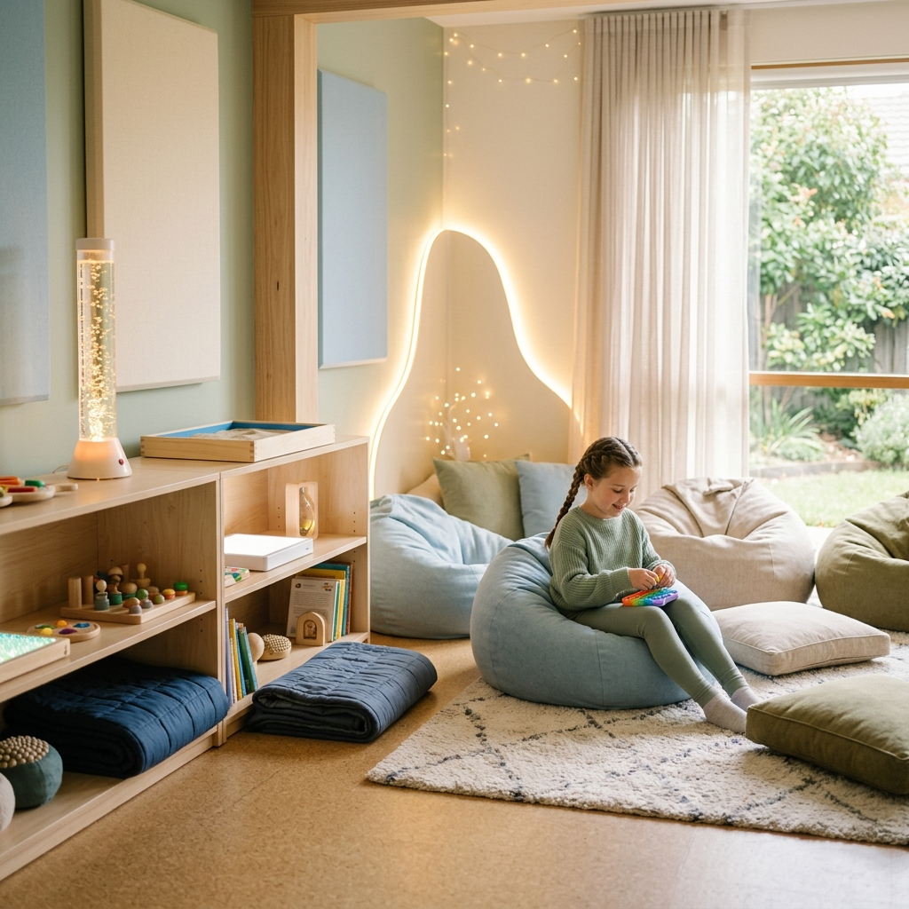
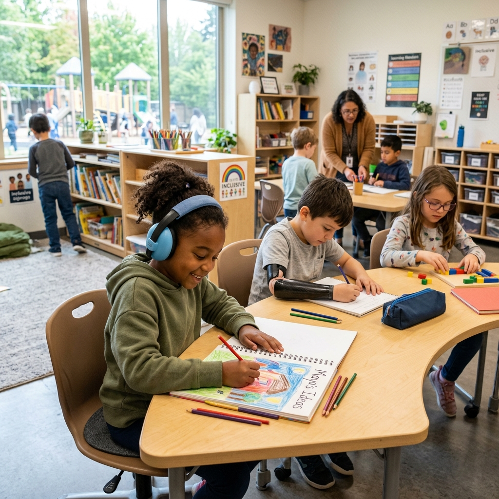
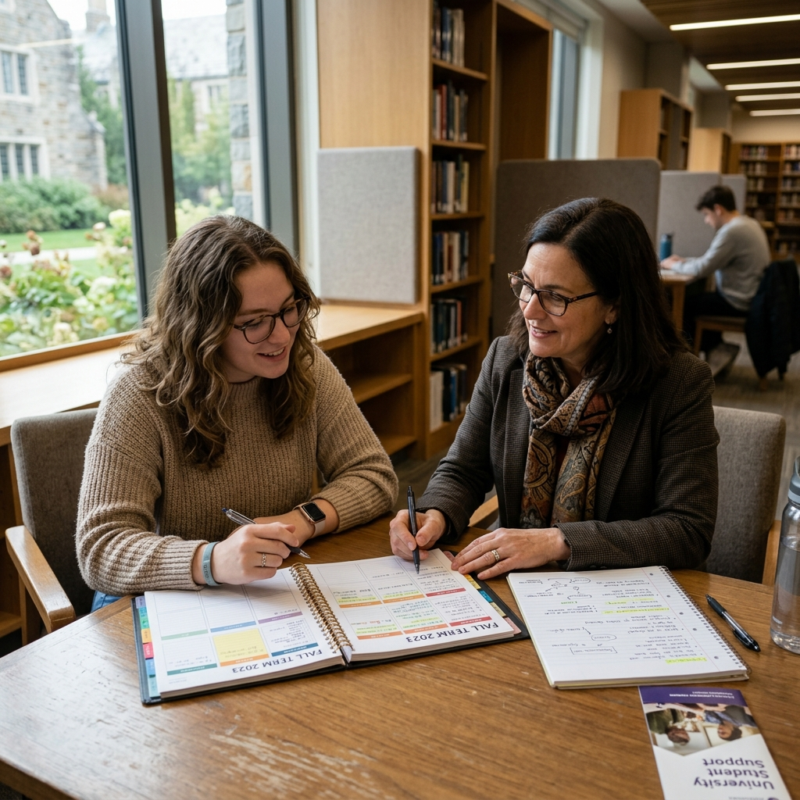

O modelo tradicional não atende a todos. Nós sabemos disso.
Educação Infantil
Sua criança não consegue focar, sofre com agitação e muitas vezes é incompreendida em salas lotadas? Faltam ferramentas de regulação emocional na escola tradicional.
Ensino Médio
Notas baixas não significam falta de inteligência. A frustração de não conseguir se adaptar aos métodos padronizados gera ansiedade e desmotivação profunda no adolescente.
Faculdade e Vida Adulta
Disfunção executiva, dificuldade em organizar prazos, apagões nas provas. Adultos com TDAH são brilhantes, mas a falta de estrutura acadêmica leva à exaustão mental.
Nossa Metodologia Especializada
Criamos um ecossistema seguro onde cada indivíduo aprende no seu próprio ritmo, com suporte psicológico e pedagógico caminhando lado a lado.
Salas Sensoriais Adaptadas
Para o ensino básico, oferecemos ambientes de descompressão, iluminação suave e estímulos controlados para prevenir sobrecargas emocionais.
Aprendizado Ativo e Lúdico
Trocamos lousas exaustivas por ensino baseado em projetos, gamificação e movimento contínuo. Entendemos que aprender pode e deve ser dinâmico.
Mentoria Executiva Universitária
Para jovens adultos, oferecemos tutoria focada em gestão de tempo estruturada para cérebros neurodivergentes, técnicas de estudo eficazes e organização executiva.
Estrutura Real. Resultados Reais.



Nossa Equipe de Especialistas
Profissionais de excelência focados no desenvolvimento humano e empatia radical.
Dra. Mariana Luz
Psicopedagoga
Prof. Carlos Mendes
Mentor Acadêmico
Ana Clara
Terapêuta Ocupacional
Histórias de Transformação
Perguntas Frequentes
Tire suas dúvidas rápidas sobre nosso formato de trabalho.
O aluno precisa ter um laudo médico fechado?
Não. Entendemos que o diagnóstico formal (como de TDAH ou TEA) pode ser demorado. Nosso acolhimento inicial é baseado nas dificuldades funcionais observadas no dia a dia, trabalhando em conjunto com os pais.
Vocês aceitam planos de saúde?
Emitimos notas fiscais detalhadas para que você possa solicitar o reembolso de sessões terapêuticas e psicopedagógicas diretamente com o seu plano de saúde, conforme as regras vigentes da ANS.
Como funciona a mentoria para universitários na prática?
Nossa mentoria é 1-a-1 e foca em driblar a disfunção executiva. Organizamos sua grade horária, criamos métodos de estudo ativo baseados em recompensas de dopamina, e cobramos o cumprimento de pequenos prazos diários para evitar que você deixe tudo para a véspera.
A escola funciona em período integral?
Para a Educação Infantil e Ensino Fundamental, oferecemos opções de meio período e período integral, onde a tarde é focada em oficinas extracurriculares (artes, esportes adaptados e habilidades sociais).
Dê o primeiro passo
Agende uma visita ao nosso Instituto ou marque uma consulta virtual de triagem. Estamos prontos para ouvir sua história.
📍 Av. Paulista, São Paulo - SP
📞 (11) 99999-9999
✉️ contato@institutoaquarela.com